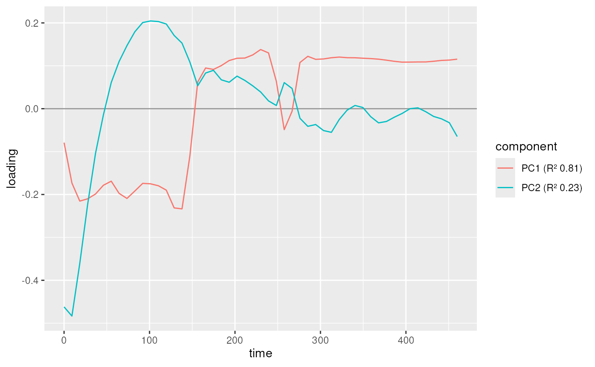

Plot temporal loadings of a tensor decomposition
Source:R/AllGenerics.R, R/plotTimeLoadings.R, R/zzz-mae.R
plotTimeLoadings.RdplotTimeLoadings() draws the time loading function of each
component of a tensor decomposition stored in metadata(x), such
as TEMPTED or PARAFAC: how strongly the component is expressed at each
time.
Usage
plotTimeLoadings(x, ...)
# S4 method for class 'SummarizedExperiment'
plotTimeLoadings(x, source, ncomponents = NULL, ...)
# S4 method for class 'MultiAssayExperiment'
plotTimeLoadings(x, ..., experiment = 1L)Arguments
- x
a
SummarizedExperimentobject.- ...
additional arguments passed to
geom_line.- source
Character scalar. Specifies the decomposition inmetadata(x): a result oftempted::tempted_all()ortempted::tempted(), a PARAFAC model with the loadings inFac(as fromparafac4microbiome::parafac()), whose third mode is time, or a matrix of time points by components with the times as row names or in a columntime.- ncomponents
Numeric scalarorvector. The components to draw: the firstncomponents, or the components given by index or name. IfNULL, draws all. (Default:NULL)- experiment
Character scalarorinteger scalar. For aMultiAssayExperiment, the experiment to plot; its samples get thecolDataofx. (Default:1L)
Details
For TEMPTED, the loadings are functions evaluated on a time grid, and
the legend gives the \(R^2\) of each component (r_square), of
the data left after the previous components; they do not add up to the
total \(R^2\) (accum_r_square). For PARAFAC, the time mode has
one loading per time point; set its row names to the times, otherwise
points are numbered in their order. The sign of a component is
arbitrary: a component and its negative describe the same pattern.
Feature and subject loadings are drawn by
miaViz::plotLoadings() and
plotSubjectScatter.
References
Shi P, et al. (2024). TEMPTED: time-informed dimensionality reduction for longitudinal microbiome studies. Genome Biology 25:317.
Examples
# TEMPTED of the species in three bioreactors
if (requireNamespace("tempted", quietly = TRUE)) {
data("minimalgut", package = "miaTime")
tse <- minimalgut
counts <- t(SummarizedExperiment::assay(tse, "counts"))
S4Vectors::metadata(tse)$tempted <- tempted::tempted_all(counts,
timepoint = tse$Time_hr_num,
subjectID = as.character(tse$StudyIdentifier), r = 2,
threshold = 1, pseudo = 0.5, do_ratio = FALSE)
plotTimeLoadings(tse, source = "tempted")
}
#> Calculate the 1th Component
#> Convergence reached at dif=8.87596919510545e-08, iter=2
#> Calculate the 2th Component
#> Convergence reached at dif=2.19221544600143e-05, iter=6
